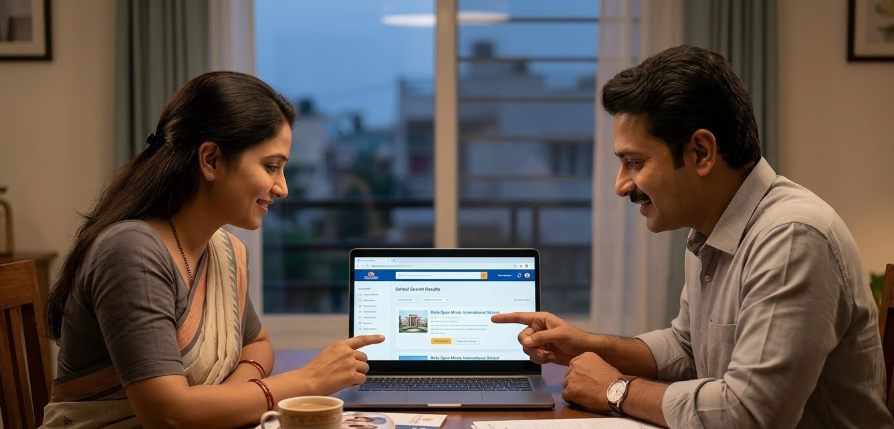

Why Choosing a CBSE School in Ballari Is the Smartest Investment for Your Child's Future

A practical guide for parents in Ballari to understand why CBSE education can shape a stronger, future-ready child.
Parents in Ballari today have more school choices than ever — but not all choices are equal. If your child’s future matters (and of course it does), understanding what makes a quality CBSE school different is the first step.
Every year, thousands of parents in Ballari search for the right school. With terms like “best school in Ballari” and “CBSE school Ballari admission” trending across Google, one thing is clear: Families are thinking carefully — and rightly so.
“The school you choose is one of the most important decisions you will ever make.”
At Birla Open Minds International School (BOMIS), Ballari, we believe education is not just about marks — it is about building curious, confident, and capable individuals, from pre-school through middle school.
What Makes CBSE the Right Board for Students in Ballari?
1. Nationally Recognised Curriculum
Whether your family moves to Bengaluru, Hyderabad, Delhi, or anywhere in India, a CBSE certificate is accepted without friction. For families in Ballari connected to industries like steel, mining, and infrastructure, where relocation is common, this portability is invaluable.
2. Strong Foundation for Competitive Exams
CBSE aligns closely with national-level exams such as JEE (Engineering), NEET (Medical), and UPSC (Civil Services). Starting early builds the conceptual strength needed for these crucial exams later in life.
3. Emphasis on Holistic Development
CBSE goes beyond academics by including sports, arts, and life skills. At BOMIS Ballari, this is delivered through dedicated facilities, structured programs, and modern teaching methods.
What Age Is Right to Start at BOMIS Ballari?
One of the most common questions parents ask is: “When should I enrol my child?” The answer: the earlier, the better.
Research shows that the first five years of life are critical for brain development. Children who attend quality pre-schools develop stronger language skills, better social confidence, and lifelong learning habits.
Programmes at BOMIS Ballari
- Pre-School (18 months – 5 years): Play-based learning, language development, motor skills, social readiness
- Primary School (6 – 10 years): Core academics, creative subjects, curiosity building
- Middle School (10 – 14 years): Conceptual learning, sports, arts, and character development
“Education is not the filling of a pail, but the lighting of a fire.”
How to Check If a School Is the Right Fit for Your Child
When visiting any school in Ballari — including BOMIS — use this checklist:
- Classroom Experience: Are children engaged or passive? Are teachers interactive or just instructing?
- Facilities: Is the campus clean, safe, and well-maintained?
- Teacher Quality: Are teachers trained, experienced, and stable?
- Curriculum Alignment: Does the board match your long-term goals?
- Safety: Is CCTV available? Is transport safe and supervised?
Visit BOMIS Ballari
BOMIS Ballari is located near Pyramid Center, opposite Sanganakallu Hill, Moka Road — easily accessible from central Ballari. We warmly invite parents to visit our campus and experience the difference firsthand.
Final Word: Ballari’s Children Deserve World-Class Education
Ballari is a city on the rise — economically, culturally, and socially. Its children deserve schools that match that ambition. A quality CBSE education, delivered in a nurturing and well-equipped environment, is one of the most powerful investments a parent can make.
At BOMIS Ballari, under the guidance of Birla Edutech Limited, we are proud to be part of that journey — one child, one classroom, one bright future at a time.
Start Your Journey Today
Give your child the gift of a world-class education at Birla Open Minds International School, Ballari.